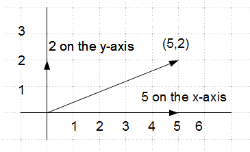
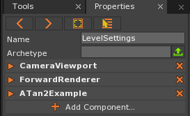
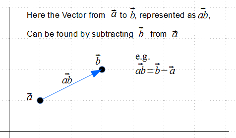
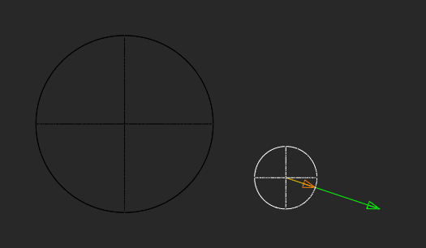
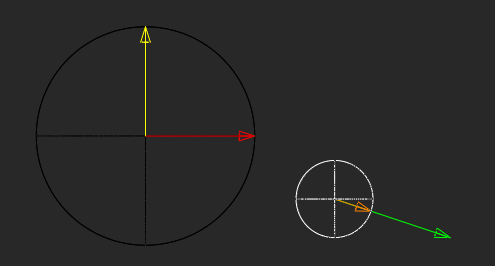
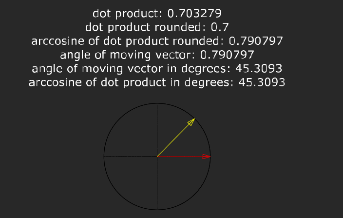

Vector Math
This snippet goes over vector math in the Zero Engine. Addition/subtraction, magnitude, normalization, and the dot product are covered.
Create a New Project
Vectors
A vector is the representation of a direction with a magnitude. An example is giving directions for travelling South by several meters. South is the direction, and several meters is the distance to travel in that direction. In our case the magnitude represents the speed.
A vector is composed of multiple components. Usually there is one component for each dimension of a vector. For now only 2 dimensional vectors are considered. A two dimensional vector has an x and a y coordinate, and this represents distances along both the x and y axis.

Although representation of vectors might look like a plotted point, position is non-existent with vectors. These plotted points are represented by the vector as some direction and magnitude away from the origin, (0, 0).
Getting the Angle of a Vector
The Angle of a vector refers to the angle the positive x-axis travelling counterclockwise to the vector whose angle we are finding.

The Angles of the vector are represented by Φ and φ respectively.
Add a new ZilchScript resource named:
ATan2ExampleIn the Objects Window
- Select the LevelSettings object
- Remove the GravityEffect component
- Remove the DragEffect component
- Add the ATan2Example component

- Update the ATan2Example script with the following code:
class ATan2Example : ZilchComponent
{
function Initialize(init : CogInitializer)
{
// We want to receive logic update events.
Zero.Connect(this.Space, Events.LogicUpdate, this.OnLogicUpdate);
}
function OnLogicUpdate(event : UpdateEvent)
{
// Make a vector for demonstration purposes:
var vectorA = Real3(1.0, 1.0, 0.0);
Console.WriteLine("vectorA: `vectorA`");
// Use atan to find the Angle in both raadians and degrees of our vector
var oppositeOverAdjacent = vectorA.Y / vectorA.X;
var arcTangentInRadians = Math.ATan(oppositeOverAdjacent);
var arcTangentInDegrees = Math.ToDegrees(arcTangentInRadians);
// Print out results
Console.WriteLine("atan - oppositeOverAdjacent: `oppositeOverAdjacent`");
Console.WriteLine("atan - Radians `arcTangentInRadians`");
Console.WriteLine("atan - Degrees: `arcTangentInDegrees`");
Console.WriteLine("---");
}
}
- Save your project
- Open the Console Window (Tilde key or Console command)
We want the Console Window open so that we can see what we print from the script at run-time.
Console Output:
vectorA: (1, 1, 0)
atan - oppositeOverAdjacent: 1
atan - Radians 0.785398
atan - Degrees: 45
---
This seems like the correct result:
- Update the following line of code in the ATan2Example script:
function OnLogicUpdate(event : UpdateEvent)
{
// Make a vector for demonstration purposes:
var vectorA = Real3(-1.0, 1.0, 0.0);
Console.WriteLine("vectorA: `vectorA`");
We set the X component of the vector to -1. The expected result is 135 degrees.
Here is what should get printed in the Console Window:
Console Output:
vectorA: (-1, 1, 0)
atan - oppositeOverAdjacent: -1
atan - Radians -0.785398
atan - Degrees: -45
---
We didn’t get 135 degrees, but we got negative 45 degrees instead. This is due to the limitations of the atan function.
- Stop the Game
- Update the following line of code in the ATan2Example script:
function OnLogicUpdate(event : UpdateEvent)
{
// Make a vector for demonstration purposes:
var vectorA = Real3(0.0, 1.0, 0.0);
Console.WriteLine("vectorA: `vectorA`");
- We set the X component of the vector to 0. The expected result is 90 degrees.
- Save your project and run the game
Console Output
---------------- Begin Game ---------------
Level 'Level' was loaded.
Loaded level 0.00s
vectorA: (0, 1, 0)
********************** Zilch Exception **********************
File "C:\Users\cassandra.sundberg\Documents\ZeroProjects\VectormathZ\Content\ATan2Example.z", line 16, in OnLogicUpdate
Attempted to divide an integer by zero
*************************************************************
We get a division by zero error because the X component is zero.
Using atan2
- Update the OnLogicUpdate function in the ATan2Example script with the following code:
function OnLogicUpdate(event : UpdateEvent)
{
// Make a vector for demonstration purposes:
var vectorA = Real3(0.0, 1.0, 0.0);
Console.WriteLine("vectorA: `vectorA`");
/*
// Use atan to find the Angle in both raadians and degrees of our vector
var oppositeOverAdjacent = vectorA.Y / vectorA.X;
var arcTangentInRadians = Math.ATan(oppositeOverAdjacent);
var arcTangentInDegrees = Math.ToDegrees(arcTangentInRadians);
// Print out results
Console.WriteLine("atan - oppositeOverAdjacent: `oppositeOverAdjacent`");
Console.WriteLine("atan - Radians `arcTangentInRadians`");
Console.WriteLine("atan - Degrees: `arcTangentInDegrees`");
Console.WriteLine("---");
*/
}
Notice how only two lines were changed
You make have noticed that the syntax higlighting changed the lines between our additions. This is to indicate that we’ve just created a block comment.
- Add the following code to the OnLogicUpdate function in the ATan2Example script:
function OnLogicUpdate(event : UpdateEvent)
{
// Make a vector for demonstration purposes:
var vectorA = Real3(0.0, 1.0, 0.0);
Console.WriteLine("vectorA: `vectorA`");
/*
// Use atan to find the Angle in both raadians and degrees of our vector
var oppositeOverAdjacent = vectorA.Y / vectorA.X;
var arcTangentInRadians = Math.ATan(oppositeOverAdjacent);
var arcTangentInDegrees = Math.ToDegrees(arcTangentInRadians);
// Print out results
Console.WriteLine("atan - oppositeOverAdjacent: `oppositeOverAdjacent`");
Console.WriteLine("atan - Radians `arcTangentInRadians`");
Console.WriteLine("atan - Degrees: `arcTangentInDegrees`");
Console.WriteLine("---");
*/
// Use atan2 to find the Angle in both raadians and degrees of our vector
var arcTangentInRadians = Math.ATan2(vectorA.Y, vectorA.X);
var arcTangentInDegrees = Math.ToDegrees(arcTangentInRadians);
// Print out results
Console.WriteLine("atan2 - Radians `arcTangentInRadians`");
Console.WriteLine("atan2 - Degrees: `arcTangentInDegrees`");
Console.WriteLine("---");
}
Now we are utilizing the atan2 function which handles these cases for us in order to provide the expected results:
Console Output:
vectorA: (0, 1, 0)
atan2 - Radians 1.5708
atan2 - Degrees: 90
---
In the Objects Window
In the Properties Window
- Remove the ATan2Example script component
Length (Magnitude) of a Vector
The magnitude is found with the Pythagorean theorem. The Pythagorean theorem states that, given a right triangle and two sides of known length, the third side can be solved for with the following equation:
Because the standard coordinate system axes are separated by a right angle:
notice the 90 degrees between the x and y axes
We can use the x coordinate of a vector as a, and the y coordinate of a vector as b, and plug both a and b into the Pythagorean theorem to solve for the magnitude of any 2D vector. Here is the Pythagorean theorem when solving for c (not solving for c2):
Our vector (5, 2) has a length of: 5.385 (rounded).
- Command :
CreateSpriteor - Select the Sprite object that was just created
- In the Properties Window
- Set Name to:
VelocityExample - Add a RigidBody component
- Under Sprite
- Set SpriteSource to: Circle
- Under Transform
- Set Scale to: [2, 2, 2]
- Under RigidBody
- Set Velocity to: [3, -1, 0]
- Set Name to:
- Save your project and run the game
The VelocityExample object is now moving at a constant velocity. Let’s see if we can set up a more visual representation of the velocity vector.
Debug Draw
The Zero Engine provides us with debug drawing functionality that allows drawing debug text, lines, and other shapes giving us more visual cues as to what is happening in our game.
- Add a new ZilchScript resource named:
VectorExample1 - Add the VectorExample1 component to the VelocityExample object
- Update the VectorExample1 script with the following code:
class VectorExample1 : ZilchComponent
{
[Dependency]
var Transform: Transform = null;
function Initialize(init : CogInitializer)
{
// We want to receive logic update events.
Zero.Connect(this.Space, Events.LogicUpdate, this.OnLogicUpdate);
}
function OnLogicUpdate(event : UpdateEvent)
{
this.DisplayUnitSphere();
}
function DisplayUnitSphere()
{
// Draw a Unit circle at this object's position.
var position = this.Owner.Transform.Translation;
var radius = 1.0;
var unitCircle = DebugSphere();
unitCircle.Position(position);
unitCircle.Radius(radius);
// Change the color for better visibility
unitCircle.Float4Color(Real4(1.0, 1.0, 1.0, 1.0));
// Make sure it draws!
unitCircle.Draw();
}
}
A sphere with a radius of 1.0 should be drawn at the location of the VelocityExample object:
Now that we have our debug drawing we can stop drawing our Sprite.
- Select the VelocityExample object
- In the Properties Window
- Under Sprite
- Set Visible: False
- Under Sprite
- Save your project and run the game
Velocity Vector
Now we will display the VelocityExample object’s velocity vector using debug draw.
- Open the VectorExample1 script
- Add the following code to the OnLogicUpdate function:
this.DisplayUnitSphere();
this.DisplayVelocityVector();
- Add the following function to the VectorExample1 class:
function DisplayVelocityVector()
{
// Settings for the debug vector
var startPosition = this.Owner.Transform.Translation;
// Point = Point + Vector
// EndPosition = StartPosition + VelocityVector
var endPosition = startPosition + this.Owner.RigidBody.Velocity;
var arrowHeadSize = 0.25;
var vectorVisual = DebugLine();
vectorVisual.HeadSize(arrowHeadSize);
vectorVisual.Start(startPosition);
vectorVisual.End(endPosition);
// Change the color for better visibility
vectorVisual.Float4Color(Real4(0.0, 1.0, 0.0, 1.0));
// Make sure it draws!
vectorVisual.Draw();
}
In this code we are adding the velocity vector to the position of the object in order to draw the vector relative to the object’s position. Remember that vectors do not have a position. The exact same vector can exist anywhere.
Scaling a Vector
Scaling a vector means changing the length or magnitude without changing its direction. In this way, scaling a vector is modifying the components of a vector without modifying the ratio between the components. This is done by multiplying or dividing each component of a vector by a single number.
Normalizing Vectors
A normalized vector (also known as a unit vector) is a vector that has a length of 1 unit. In other words, normalizing a vector means that the length will be 1, but the direction is retained. A vector is normalized by dividing each component (x, y, z, etc.) by the magnitude of the vector.

Vectors are denoted with an arrow while unit vectors have a “hat”, ^, above them. The bars around the v means it represents the magnitude of that vector
- Open the VectorExample1 script
- Add the following code to the OnLogicUpdate function:
this.DisplayUnitSphere();
this.DisplayVelocityVector();
this.DisplayNormalizedVector();
- Add the following function to the VectorExample1 class:
function DisplayNormalizedVector()
{
// Settings for the debug vector
var startPosition = this.Owner.Transform.Translation;
// Point = Point + Vector
// EndPosition = StartPosition + Normalized VelocityVector
var endPosition = startPosition + Math.Normalize(this.Owner.RigidBody.Velocity);
var arrowHeadSize = 0.25;
var vectorVisual = DebugLine();
vectorVisual.HeadSize(arrowHeadSize);
vectorVisual.Start(startPosition);
vectorVisual.End(endPosition);
// Change the color for better visibility
vectorVisual.Float4Color(Real4(1.0, 0.5, 0.0, 1.0));
// Make sure it draws!
vectorVisual.Draw();
}
Here you can see the difference between the full velocity vector and the normalized unit vector:
Observe how the orange vector is the same length as the radius of the unit sphere. This visually shows us that the orange vector is the normalized velocity vector. You can change the RigidBody component’s Velocity and then run the game again to see the velocity direction and magnitude change.
Dot Product
The dot product is sort of like a mix between scaling and adding vectors. To perform a dot product you sum the products of each component between two vectors. In this way component-wise multiplication is performed, and the result is a scalar.
If this sounded confusing don’t worry, there are some diagrams and more explanations coming along.
In the above math, the x components were multiplied together, and the y components were multiplied together. These two multiplications result in two products (3 and 10). Add these two products together to get to a result of 13, which is the dot product of the two vectors. The following diagram describes the dot product between two vectors on the unit circle:
The above image demonstrated the relationship between two vectors that are dotted together: the scalar result represents one vector projected onto the other. Projection can be thought of as the magnitude in which both vectors travel in the same direction; thus result of the dot product is a length.
Three Dimensions
Adding a third dimension (3D) introduces a z component to the vector. All operations in the previous sections are the exact same, except one more step is introduced. For example, adding two 3D vectors will look like the following:
Scaling a vector follows the same pattern:
And lastly the dot product between two 3D vectors:
Because we are focusing on 2D, we will just make the Z component be zero unless we are using the Z component for sorting objects (choosing which objects are drawn in front of or behind other objects) as seen below.
Dot Product In Code
Command :
CreateSpriteorIn the Properties Window
- Set Name to:
DPExample
- Under Sprite
- Set Visible to: False
- Under Transform
- Set Translation to: [2, 2, 0]
- Set Name to:
We will be getting the vector from the origin to this object.
- Set Scale to: [2, 2, 2]
The following diagram describes how we get a vector from one point to another:

- Add a new ZilchScript resource named:
VectorExample2 - Add the VectorExample2 component to the DPExample object
- Update the VectorExample2 script with the following code:
class VectorExample2 : ZilchComponent
{
var SphereRadius: Real = 2.83;
function Initialize(init : CogInitializer)
{
// We want to receive logic update events.
Zero.Connect(this.Space, Events.LogicUpdate, this.OnLogicUpdate);
}
function OnLogicUpdate(event : UpdateEvent)
{
this.DisplaySphere();
}
function DisplaySphere()
{
var startPosition = Real3(0.0, 0.0, -20.0);
var color = Real4(0.0, 0.0, 0.0, 1.0);
var sphere = DebugSphere();
sphere.Position(startPosition);
sphere.Float4Color(color);
sphere.Radius(this.SphereRadius);
sphere.Draw();
}
}
This code simply displays a unit sphere at the origin of the level, but we offset it a bit on the z-axis so that the debug draw lines we draw later on will be on top. (The statement about using the Z component for sorting that was stated above was referring to this section of the snippet.) Here is what the level should look like:

- Stop the Game
- Open the VectorExample2
- Add the following code to the OnLogicUpdate function:
this.DisplaySphere();
this.UpdateAngle();
// Calculate and display dot product results
this.DotProductExample();
* Add the following member to the **VectorExample2** class
var SphereRadius: Real = 2.83;
var Angle: Real = Math.Pi * 0.5; // Radians
* Add the following functions to the **VectorExample2** class
function UpdateAngle()
{
if (Zero.Keyboard.KeyIsDown(Keys.Left))
{
this.Angle += 0.02;
}
if (Zero.Keyboard.KeyIsDown(Keys.Right))
{
this.Angle -= 0.02;
}
}
function DotProductExample()
{
// Display x-axis
var xAxis = Real3(this.SphereRadius, 0.0, 0.0);
// Settings for the debug vector
var startPosition = Real3();
var endPosition = xAxis;
var arrowHeadSize = 0.25;
var vectorVisual = DebugLine();
vectorVisual.HeadSize(arrowHeadSize);
vectorVisual.Start(startPosition);
vectorVisual.End(endPosition);
// Change the color for better visibility
vectorVisual.Float4Color(Real4(1.0, 0.0, 0.0, 1.0));
// Make sure it draws!
vectorVisual.Draw();
// Settings for the debug vector
startPosition = Real3();
endPosition =
Math.RotateVector(xAxis,
Real3(0.0, 0.0, 1.0),
this.Angle);
arrowHeadSize = 0.25;
vectorVisual.HeadSize(arrowHeadSize);
vectorVisual.Start(startPosition);
vectorVisual.End(endPosition);
// Change the color for better visibility
vectorVisual.Float4Color(Real4(1.0, 1.0, 0.0, 1.0));
// Make sure it draws!
vectorVisual.Draw();
}
In this code we are create a vector to represent the x-axis and another vector with an adjustable angle via the left and right arrows starting at a value of π/2 or 90 degrees.
Here is how the level should look:

We can adjust the angle of the yellow vector with the left and right arrow keys.
Refactor Challenge
Write a helper function for displaying the vectors.
Reduce this:
var vectorVisual = DebugLine();
vectorVisual.HeadSize(arrowHeadSize);
vectorVisual.Start(startPosition);
vectorVisual.End(endPosition);
// Change the color for better visibility
vectorVisual.Float4Color(Real4(1.0, 0.0, 0.0, 1.0));
// Make sure it draws!
vectorVisual.Draw();
to this:
// color
this.DrawVector(startPosition, endPosition, arrowHeadSize, Real4(1.0, 0.0, 0.0, 1.0));
Now we will calculate the dot product between the 2 vectors.
- Open the VectorExample2 script
- Add the following code to the DotProductExample function:
// Make sure it draws!
vectorVisual.Draw();
// Calculate the dot product between the vector we have and the x-axis:
xAxis = Math.Normalize(xAxis);
var movingVector = Math.Normalize(endPosition);
// Here we are getting the dot product of two normalized vectors
var dotProduct = Math.Dot(movingVector, xAxis);
var dotProductRounded = Math.Round(dotProduct, -2);
This code gets the vector from the origin to the object, and then dots it with the vector representing the x-axis. Notice how we normalize both vectors before we dot them. This is because if we normalize them first, then we can use the result to get the angle between the two vectors. This will only work if both vectors are normalized.
Getting the Angle Between Two Vectors in Code
- Append the following code to the DotProductExample function:
// We will also display the arccosine of this value to compare with the angle we used to create our vector
var arcCosineOfDotProduct = Math.ACos(dotProduct);
var arcCosineOfDotProductInDegrees = Math.ToDegrees(arcCosineOfDotProduct);
var displayCalculations = DebugText();
displayCalculations.Position(Real3(0.0, 8.0, 0.0));
var displayText = StringBuilder();
displayText.WriteLine("dot product: `dotProduct`");
displayText.WriteLine("dot product rounded: `dotProductRounded`");
displayText.WriteLine("arccosine of dot product rounded: `arcCosineOfDotProduct`");
displayText.WriteLine("angle of moving vector: `this.Angle`");
displayText.WriteLine("angle of moving vector in degrees: `Math.ToDegrees(this.Angle)`");
displayText.WriteLine("arccosine of dot product in degrees: `Math.ToDegrees(arcCosineOfDotProduct)`");
displayCalculations.Size(0.60);
displayCalculations.Float4Color(Real4(1.0, 1.0, 1.0, 1.0));
displayCalculations.DisplayText(displayText.ToString());
displayCalculations.Draw();


Here we can see that before the angle wraps around the arccosine gives us the same angle. This only works with normalized vectors.
You may notice that arccosine only works for a limited range. The inability to determine when the vector has a negative y-value leads to positive angles that no longer reflect the angle of the vector. A problem often solved using the cross-product, this is topic beyond the scope of this lesson.
Now we know how to add, subtract, find the magnitude of, get the dot product of, create from an angle , and normalize vectors via the Math library as well as use some handy debug draw features.